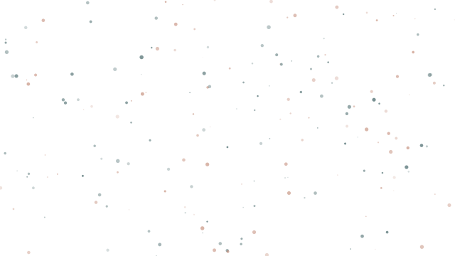
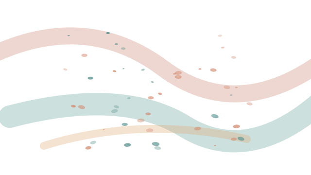
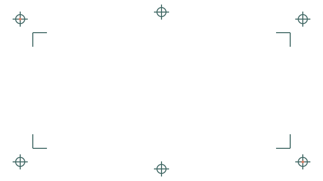
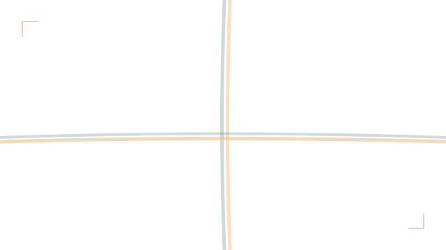

Original transparent print layers
预览中的底图只存在于 HTML CSS 中，SVG 文件本身透明、不嵌入纸纹照片或版权媒体。

VG-063 · Ink mist / 喷墨雾点透明层

VG-064 · Pigment laydown / 颜料铺墨透明层

VG-065 · Registration crosshairs / 套印定位标透明层

VG-066 · Fold & crease / 折页压痕透明层